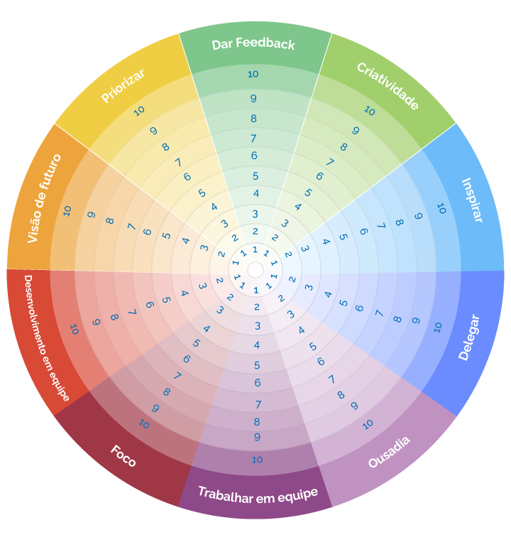

Liderança Inspiradora
Bem-vindo(a) à aula 10 do curso Ferramentas para Gestão de PessoasNo curso Ferramentas para Gestão de Pessoas foram apresentados diversos instrumentos conceituais e práticos relacionados à Liderança, desde modelos que ajudam a compreender o estágio de amadurecimento de sua equipe até técnicas de comunicação que auxiliam na gestão do desempenho e no feedback, dentre outros temas igualmente relevantes.
Todo esse ferramental é importante para construir uma base sólida pela qual o líder possa realizar uma gestão competente e alinhada aos objetivos organizacionais.
No entanto, há algo mais que diferencia os líderes e, além de agregar valor ao trabalho, deixa um legado para a organização e para as equipes: a capacidade de inspirar.
Nesta aula vamos abordar a questão da confiança e da capacidade de influenciar para que você possa se inspirar e, ao mesmo tempo, se tornar um líder inspirador.
Ao final da aula, você encontrará recomendações de leituras e vídeos.
Vamos lá?
Bom estudo!
A capacidade de influenciar
O que significa ser um líder nos dias atuais?
"Liderar é influenciar pessoas a, entusiasticamente, contribuir com seus corações, mentes, criatividade, excelência e outros recursos, rumo aos objetivos comuns. É influenciar a se comprometerem com a missão e, principalmente, é influenciar as pessoas a serem as melhores pessoas que elas podem ser”
Assista ao trecho do filme e reflita sobre os aspectos apresentados.
Confiança - a pedra fundamental da liderança
Como já vimos na aula 10 do curso “Entendendo o comportamento organizacional”, o nível de confiança do colaborador na organização e em seus líderes influencia diretamente o seu desempenho no trabalho e no seu comprometimento organizacional.
Para ser digno da confiança de sua equipe, o líder precisa demonstrar interesse genuíno por cada integrante de sua equipe, estando sempre próximo e prestando o apoio necessário para que as pessoas possam desempenhar seu trabalho e desenvolver seus potenciais.
Confiança
Capacidade (competências)
Credibilidade (faço o que digo)
Sinceridade (não esconde o jogo)
Coerência (não digo só o que o outro quer ouvir)
Receptividade (aceito críticas)
Interesse genuíno no outro
"Gestão implica fazer o trabalho por meio das pessoas, e liderança é um processo de influência social.”
Traduzido do inglês-Julian Birkinshaw FBA, FAcSS é um acadêmico britânico. Ele é professor de estratégia e empreendedorismo na London Business School, onde é o diretor acadêmico do Instituto Deloitte de Inovação e Empreendedorismo. Ele é autor de quatro livros sobre administração.
Fonte: Wikipedia (inglês)
Balança da confiança
No dia a dia, na gestão da sua equipe...
Criando confiança

Ajudar meus liderados a encontrarem um significado no trabalho
Informar meus liderados sobre decisões importantes
Envolvê-los com essas decisões, levando a sério suas sugestões
Agradecer sinceramente sempre que alguém dá o melhor de si
Oferecer ferramentas e ajudar a planejar o desenvolvimento de carreira de cada um

Criar um ambiente seguro (fisicamente, psicologicamente e emocionalmente) e proteger os interesses de minha equipe
Comemorar as conquistas realizadas
Compartilhar os resultados da empresa com todos
Roda da Liderança
Roda da Liderança
Como você se avalia em cada uma dessas áreas?
Clique na imagem para fazer o download do arquivo deste gráfico, e marque de 1 a 10 como você acredita que é o seu desempenho em cada um dos aspectos descritos na roda.
{kind=link}
Como analisar seus resultados
- Racionalmente, pensamos em mudar o que está pior. Na verdade devemos pensar em qual aspecto a mudança provocará maior impacto . Pense: “Em qual área, se eu focar meus esforços, eu terei maior ganho em outras áreas?”
- Depois que tiver identificado, pergunte-se como tal área impactará nas demais. Faça esse questionamento área por área. Verifique se as respostas estão coerentes, se quer mudar.
- Pense em algo que você possa fazer, que não fez antes e que seja simples para melhorar essa área. ATENÇÃO: Detalhe o comportamento!
Por exemplo:
Melhorar comunicação - como?
Ouvir mais - quem, especificamente? Como você agiria?
Quando irá fazer?
Como lembrar?
O mais importante desse exercício é o plano de ação que você vai elaborar depois de avaliar seus resultados.
O novo mindset da liderança
Nos tempos atuais, os valores organizacionais mudaram. O que se priorizava há 10 anos não é mais a prioridade atual. Os valores pessoais, senso de propósito e autodesenvolvimento são, atualmente, importantes pilares da vida, tanto no contexto privado quanto no profissional.
Essa mudança de comportamento representa uma mudança no mindset do líder, ou seja, o modelo mental do líder deve evoluir de acordo com os novos paradigmas. Antes o líder era uma figura de poder, nem sempre legitimado pelo grupo, que ficava numa posição superior a seus subordinados e muitas vezes tinha um tom autoritário. Hoje, o líder deve estar perto de sua equipe, trabalhar junto para conquistar a confiança das pessoas, valorizando as contribuições individuais para o alcance dos objetivos coletivos.
Desperte o líder em você
ACREDITE
Cada um é o líder da própria vida e capaz de mudar para melhor, encontrando um propósito e aumentando a autoestima. Em primeiro lugar, resgate a si mesmo, valorize o que você faz e o que entrega. Depois, encontre um propósito que faça sentido para você, para seu entorno e que seja bom para a sociedade. Acredite que já tem todo o potencial necessário para ser protagonista e comece a praticar com mais efetividade: estude e refine metas e objetivos.
CONHEÇA A SI MESMO
Para trilhar um caminho de liderança é importantíssimo conhecer a si mesmo. Faça um autodiagnóstico: olhe para dentro e pense sobre suas fortalezas e fraquezas. Isso será fundamental para seu desenvolvimento pessoal e, também, no momento de compor uma equipe. Lembre-se: times de alta performance têm habilidades complementares às do gestor.
PROTAGONIZE
Desenvolva um espírito empreendedor dentro da empresa e, mesmo que não tenha ainda o cargo de gestor, chame para si responsabilidades de liderança. Uma boa maneira de fazer isso é liderar um projeto ou uma equipe multidisciplinar. E não tenha medo de sugerir essa atuação a seus superiores, pois quem age de maneira diferente costuma se destacar.
CRIE OPÇÕES
Busque constantemente seu desenvolvimento e novas maneiras de atuar, seja para crescer na companhia, seja para trabalhar em outro local no futuro. Ter outros trilhos de carreira guardados na manga é importante para superar os desafios, como a busca por um novo emprego ou a demora de mudança de mentalidade de uma empresa mais conservadora.
PROCURE UM TUTOR
Os pré-requisitos são: alguém que tenha interesse genuíno em você, pense diferente e o estimule a refletir. Esse tutor não precisa ser um super-herói, apenas alguém aberto ao diálogo. E saiba que você mesmo pode ser seu tutor. A única pessoa do mundo que sempre estará disponível para lhe fazer pensar e que tem o interesse mais genuíno por você é você.
CONSTRUA A PRÓPRIA ILHA
Mesmo que sua empresa adote um modelo mais tradicional de gestão e os outros líderes sejam mais hierárquicos, comece a mudança por você. Busque proximidade e encontre a convergência entre os propósitos de seus liderados e os da empresa. Se você não tem o apoio de toda a companhia, crie uma ilha de prosperidade e felicidade em sua área.
Fonte: Revista Você S.A., outubro de 2019.
Resumo da aula 10
Chegamos ao final da aula 10
A intenção desta aula é “plantar a semente” para que você possa desenvolver todo o seu potencial e possa ser inspirado e inspirar sua equipe.
Desperte o líder inspirador que existe em você!